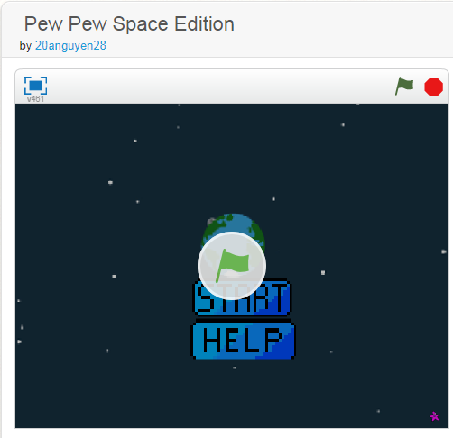

Portfolio

Welcome to Pew Pew Space Edition. Here you will find that the scoring system is based on how many enemies you've eliminated and of course the you can get more points
when the game continues. The longer the game the more the enemy. Of course the game would be boring if the it spawned in a fixed spot so we made it so it spawned in random
coordinates. By touching any of the enemy ships, you will lose a diamond. Diamonds can be described as life points and you have 3. Losing all 3 will be game over.
Reflection
I made this game because it was simple and straightfoward game. I was inspired by a game I used to play a few year back. Thought it's not like the original it still conveys the main
concept of the game. Two successful things while developing this game would be the shadow and the movement of the start and back button. However with succuess also comes failure. We
were planning on making the boss shoot also but we didn't have enough time to figure out how. Another problem would be the background of the instructions. Sometimes it would stay in
the gameplay area. If I had more time I would had added buffer ups and more bosses.